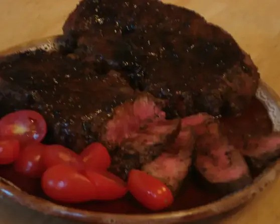

Kangaroo Fillet
Kangaroo Fillet
Thought you couldn't eat one? Think again! Odin beat up Mr Kangaroo fair and square in a battle to the death, and his meat will serve well in the dinner hall tonight!
Ingredients:
- 1lb kangaroo fillet (tenderloin steak)
- 1 tablespoon olive oil
- 1 tablespoon kosher salt
- ½ teaspoon thyme
- 1 teaspoon fresh ground pepper
- 4 tablespoons Worcestershire sauce
- 1.5 teaspoon sugar
Steps:
- Heat the oil in a heavy nonstick pan.
- Rub all sides of the meat w/ the salt, pepper and thyme.
- Mix worcestershire sauce and sugar together and drizzle ONLY HALF over meat; reserving other half.
- Sear meat on high heat quickly on each side (for about 2 minutes each side) to seal juices.
- Reduce heat slightly and cook until just a little pink inside of each piece.
- Stir remaining sauce into pan juices.
- Serve meat with the pan juices.
Back to recipes